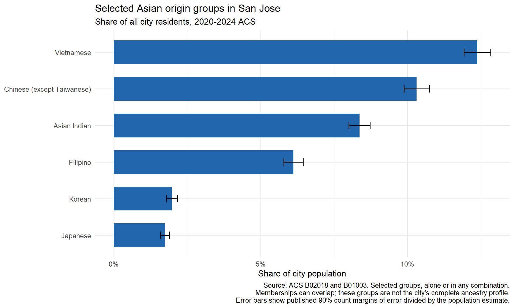
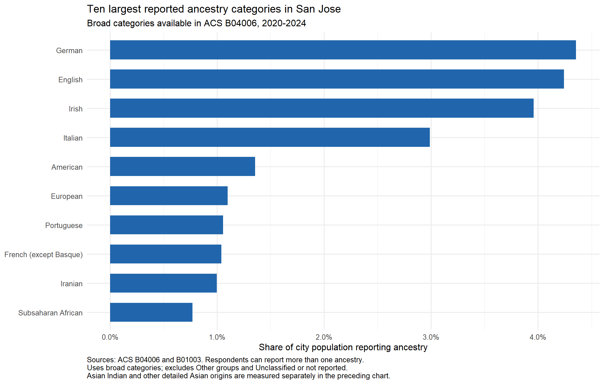
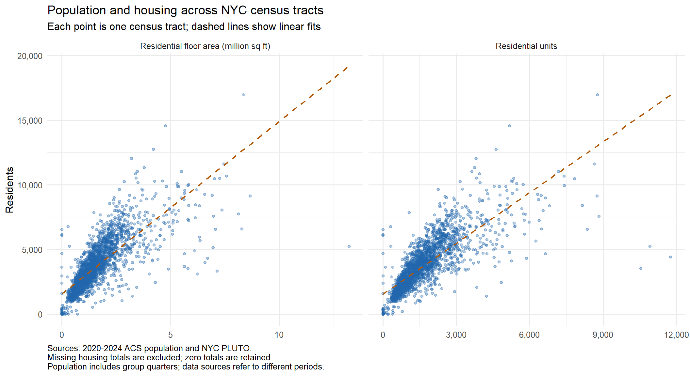
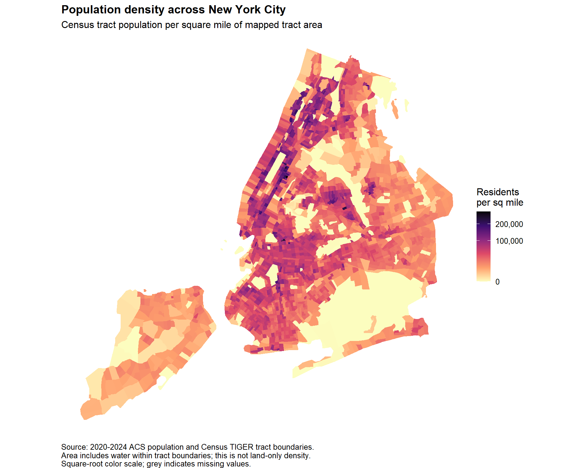
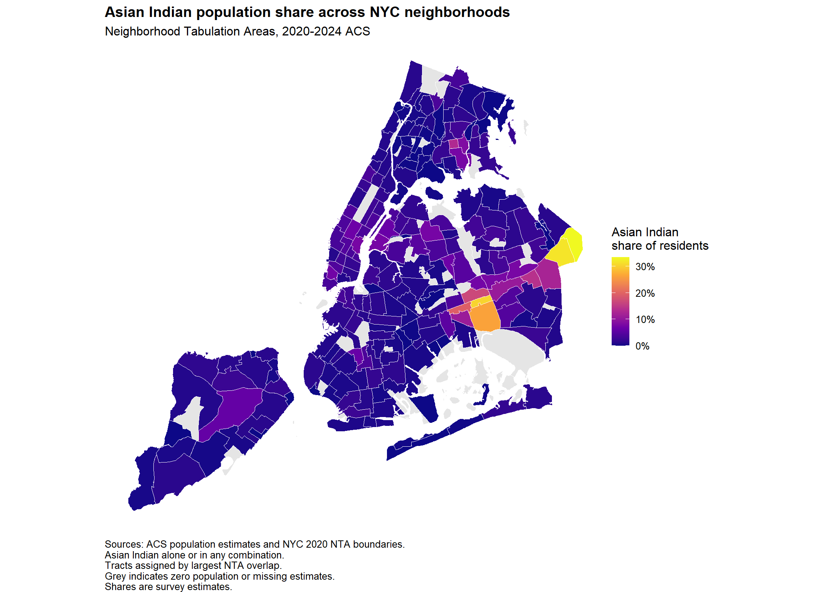
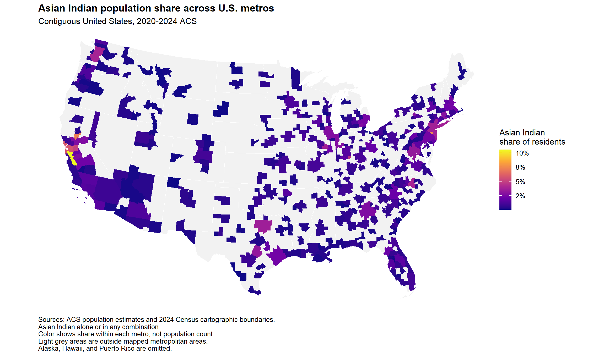

Show code
library(tidycensus)
library(dplyr)
library(readr)
dir.create("data/mp03", recursive = TRUE, showWarnings = FALSE)
acs_year <- 2024
population_variables <- c(
total_population = "B01003_001",
asian_indian = "B02018_021"
)cbsa_file <- file.path(
"data", "mp03", "acs2024_cbsa_indian.csv"
)
# Download once, then reuse the saved file.
if (!file.exists(cbsa_file)) {
cbsa_download <- get_acs(
geography = "cbsa",
variables = population_variables,
year = acs_year,
survey = "acs5",
geometry = FALSE
)
write_csv(cbsa_download, cbsa_file)
}
cbsa_population <- read_csv(
cbsa_file,
col_types = cols(
GEOID = col_character(),
NAME = col_character(),
variable = col_character(),
estimate = col_double(),
moe = col_double()
)
)
cbsa_population |>
summarise(
rows = n(),
areas = n_distinct(GEOID),
missing_estimates = sum(is.na(estimate))
)# A tibble: 1 × 3
rows areas missing_estimates
<int> <int> <int>
1 1870 935 0nyc_tract_file <- file.path(
"data", "mp03", "acs2024_nyc_tracts.gpkg"
)
if (!file.exists(nyc_tract_file)) {
nyc_tract_download <- get_acs(
geography = "tract",
variables = population_variables,
state = "NY",
county = c(
"Bronx", "Kings", "New York", "Queens", "Richmond"
),
year = acs_year,
survey = "acs5",
geometry = TRUE,
output = "wide"
) |>
rename(
total_population = total_populationE,
total_population_moe = total_populationM,
asian_indian = asian_indianE,
asian_indian_moe = asian_indianM
)
sf::write_sf(
nyc_tract_download,
nyc_tract_file,
layer = "nyc_tracts"
)
}
nyc_tracts <- sf::read_sf(
nyc_tract_file,
layer = "nyc_tracts"
)
nyc_tracts |>
sf::st_drop_geometry() |>
summarise(
tracts = n(),
boroughs = n_distinct(substr(GEOID, 1, 5)),
missing_total = sum(is.na(total_population)),
missing_indian = sum(is.na(asian_indian))
)# A tibble: 1 × 4
tracts boroughs missing_total missing_indian
<int> <int> <int> <int>
1 2327 5 0 0load_nyc_nta <- function(data_dir = "data/mp03") {
dir.create(
data_dir, recursive = TRUE, showWarnings = FALSE
)
zip_file <- file.path(data_dir, "nyc_nta2020.zip")
extract_dir <- file.path(data_dir, "nyc_nta2020")
nta_url <- paste0(
"https://data.cityofnewyork.us/api/geospatial/",
"9nt8-h7nd?method=export&format=Shapefile"
)
# Download the ZIP only if it is not already saved.
if (!file.exists(zip_file)) {
download.file(
nta_url, zip_file, mode = "wb", quiet = TRUE
)
}
shape_files <- list.files(
extract_dir,
pattern = "\\.shp$",
full.names = TRUE,
recursive = TRUE
)
# Extract the archive only if the shapefile is missing.
if (length(shape_files) == 0L) {
dir.create(
extract_dir, recursive = TRUE, showWarnings = FALSE
)
unzip(zip_file, exdir = extract_dir)
shape_files <- list.files(
extract_dir,
pattern = "\\.shp$",
full.names = TRUE,
recursive = TRUE
)
}
stopifnot(length(shape_files) == 1L)
nta <- sf::read_sf(shape_files[[1]])
nta |>
select(
nta_code = nta2020,
nta_name = ntaname,
borough = boroname,
nta_type = ntatype
)
}
nyc_nta <- load_nyc_nta()
nyc_nta |>
sf::st_drop_geometry() |>
summarise(
ntas = n(),
boroughs = n_distinct(borough),
missing_codes = sum(is.na(nta_code))
)# A tibble: 1 × 3
ntas boroughs missing_codes
<int> <int> <int>
1 262 5 0# Use a common local coordinate system for measuring overlap.
nyc_tracts_projected <- nyc_tracts |>
sf::st_transform(2263) |>
sf::st_make_valid()
nyc_nta_projected <- nyc_nta |>
sf::st_transform(2263) |>
sf::st_make_valid()
# Assign each tract to the NTA with the largest intersection.
nyc_tracts_nta <- sf::st_join(
nyc_tracts_projected,
nyc_nta_projected |> select(nta_code),
left = TRUE,
largest = TRUE
)
# Check that no tract was duplicated or populated tract left unmatched.
stopifnot(
nrow(nyc_tracts_nta) == nrow(nyc_tracts),
n_distinct(nyc_tracts_nta$GEOID) == nrow(nyc_tracts),
all(
nyc_tracts_nta$total_population[
is.na(nyc_tracts_nta$nta_code)
] == 0
),
all(
nyc_tracts_nta$asian_indian[
is.na(nyc_tracts_nta$nta_code)
] == 0
)
)
nyc_nta_totals <- nyc_tracts_nta |>
sf::st_drop_geometry() |>
filter(!is.na(nta_code)) |>
group_by(nta_code) |>
summarise(
tracts = n(),
total_population = sum(total_population),
asian_indian = sum(asian_indian),
.groups = "drop"
)
# Reconnect the neighborhood totals to their boundaries.
nyc_neighborhoods <- nyc_nta_projected |>
left_join(
nyc_nta_totals,
by = "nta_code",
relationship = "one-to-one"
) |>
mutate(
indian_share = if_else(
total_population > 0,
asian_indian / total_population,
NA_real_
)
)
# Confirm that aggregation preserved the population totals.
stopifnot(
sum(nyc_neighborhoods$total_population, na.rm = TRUE) ==
sum(nyc_tracts$total_population),
sum(nyc_neighborhoods$asian_indian, na.rm = TRUE) ==
sum(nyc_tracts$asian_indian)
)
nyc_neighborhoods |>
sf::st_drop_geometry() |>
summarise(
ntas = n(),
ntas_with_data = sum(!is.na(total_population)),
total_population = sum(total_population, na.rm = TRUE),
asian_indian = sum(asian_indian, na.rm = TRUE)
)# A tibble: 1 × 4
ntas ntas_with_data total_population asian_indian
<int> <int> <dbl> <dbl>
1 262 261 8483844 239474library(dplyr)
library(readr)
load_nyc_pluto <- function(
data_dir = "data/mp03",
page_size = 50000L
) {
dir.create(
data_dir,
recursive = TRUE,
showWarnings = FALSE
)
cache_file <- file.path(data_dir, "pluto_selected.csv")
pluto_types <- cols(
bbl = col_character(),
borough = col_character(),
bct2020 = col_character(),
version = col_character(),
.default = col_double()
)
if (!file.exists(cache_file)) {
endpoint <- paste0(
"https://data.cityofnewyork.us/resource/",
"64uk-42ks.csv"
)
fields <- paste(
"bbl", "borough", "bct2020", "officearea", "resarea",
"unitsres", "numfloors", "comarea", "bldgarea",
"version",
sep = ","
)
# Get the expected number of records.
count_response <- httr2::request(endpoint) |>
httr2::req_url_query(
`$select` = "count(*) AS total_rows"
) |>
httr2::req_retry(
max_tries = 6,
retry_on_failure = TRUE,
is_transient = function(resp) {
httr2::resp_status(resp) %in%
c(429, 500, 502, 503, 504)
}
) |>
httr2::req_timeout(120) |>
httr2::req_perform()
expected_rows <- read_csv(
I(httr2::resp_body_string(count_response)),
show_col_types = FALSE
)$total_rows[[1]]
pages <- list()
offset <- 0L
repeat {
response <- httr2::request(endpoint) |>
httr2::req_url_query(
`$select` = fields,
`$limit` = page_size,
`$offset` = offset,
`$order` = ":id"
) |>
httr2::req_retry(
max_tries = 6,
retry_on_failure = TRUE,
is_transient = function(resp) {
httr2::resp_status(resp) %in%
c(429, 500, 502, 503, 504)
}
) |>
httr2::req_timeout(120) |>
httr2::req_perform()
page <- read_csv(
I(httr2::resp_body_string(response)),
col_types = pluto_types
)
pages[[length(pages) + 1L]] <- page
message(
"PLUTO rows downloaded: ",
offset + nrow(page)
)
if (nrow(page) < page_size) {
break
}
offset <- offset + page_size
}
pluto_download <- bind_rows(pages)
# Check completeness and unique lot identifiers.
stopifnot(
nrow(pluto_download) == expected_rows,
!anyNA(pluto_download$bbl),
!anyDuplicated(pluto_download$bbl)
)
write_csv(pluto_download, cache_file)
}
read_csv(cache_file, col_types = pluto_types)
}
pluto <- load_nyc_pluto()
pluto |>
summarise(
lots = n(),
boroughs = n_distinct(borough),
unique_lots = n_distinct(bbl),
missing_tract_codes = sum(is.na(bct2020))
)# A tibble: 1 × 4
lots boroughs unique_lots missing_tract_codes
<int> <int> <int> <int>
1 858312 5 858312 1102# Convert PLUTO's borough-and-tract code to Census GEOID format.
pluto_with_tract <- pluto |>
mutate(
county_code = recode(
substr(bct2020, 1, 1),
"1" = "061",
"2" = "005",
"3" = "047",
"4" = "081",
"5" = "085",
.default = NA_character_
),
GEOID = if_else(
grepl("^[1-5][0-9]{6}$", bct2020),
paste0("36", county_code, substr(bct2020, 2, 7)),
NA_character_
)
)
# Quantify office space that cannot be assigned to a tract.
office_coverage <- pluto_with_tract |>
summarise(
lots_without_tract = sum(is.na(GEOID)),
office_sqft_without_tract = sum(
officearea[is.na(GEOID)],
na.rm = TRUE
)
)
print(office_coverage)# A tibble: 1 × 2
lots_without_tract office_sqft_without_tract
<int> <dbl>
1 1102 1536434# Sum office floor area across lots in each tract.
pluto_tract_totals <- pluto_with_tract |>
filter(!is.na(GEOID)) |>
group_by(GEOID) |>
summarise(
lots = n(),
office_sqft = sum(officearea, na.rm = TRUE),
.groups = "drop"
)
stopifnot(
all(pluto_tract_totals$GEOID %in% nyc_tracts$GEOID)
)
tract_office <- nyc_tracts |>
sf::st_drop_geometry() |>
select(GEOID, NAME) |>
inner_join(
pluto_tract_totals,
by = "GEOID",
relationship = "one-to-one"
)
top_office_tracts <- tract_office |>
slice_max(office_sqft, n = 5, with_ties = FALSE) |>
arrange(desc(office_sqft))
top_office_tracts |>
gt::gt() |>
gt::cols_label(
GEOID = "Census tract GEOID",
NAME = "Census tract",
lots = "Tax lots",
office_sqft = "Office floor area (sq ft)"
) |>
gt::fmt_number(
columns = c(lots, office_sqft),
decimals = 0
) |>
gt::tab_source_note(
source_note = paste(
"Source: NYC PLUTO.",
"Lots without tract codes are excluded."
)
)| Census tract GEOID | Census tract | Tax lots | Office floor area (sq ft) |
|---|---|---|---|
| 36061000900 | Census Tract 9; New York County; New York | 103 | 17,396,739 |
| 36061001300 | Census Tract 13; New York County; New York | 85 | 16,889,181 |
| 36061011300 | Census Tract 113; New York County; New York | 103 | 15,679,979 |
| 36061009400 | Census Tract 94; New York County; New York | 92 | 15,433,200 |
| 36061000700 | Census Tract 7; New York County; New York | 68 | 14,790,091 |
| Source: NYC PLUTO. Lots without tract codes are excluded. | |||
# Connect each PLUTO lot to its tract's assigned neighborhood.
tract_nta_lookup <- nyc_tracts_nta |>
sf::st_drop_geometry() |>
select(GEOID, nta_code)
pluto_with_nta <- pluto_with_tract |>
left_join(
tract_nta_lookup,
by = "GEOID",
relationship = "many-to-one"
)
stopifnot(nrow(pluto_with_nta) == nrow(pluto))
# Check housing data that cannot enter the neighborhood totals.
housing_coverage <- pluto_with_nta |>
summarise(
lots_without_nta = sum(is.na(nta_code)),
units_without_nta = sum(
unitsres[is.na(nta_code)],
na.rm = TRUE
),
lots_missing_units = sum(is.na(unitsres))
)
print(housing_coverage)# A tibble: 1 × 3
lots_without_nta units_without_nta lots_missing_units
<int> <dbl> <int>
1 1105 4444 408# Sum reported residential units for each neighborhood.
nta_housing <- pluto_with_nta |>
filter(!is.na(nta_code)) |>
group_by(nta_code) |>
summarise(
residential_units = sum(unitsres, na.rm = TRUE),
.groups = "drop"
) |>
left_join(
nyc_nta |>
sf::st_drop_geometry() |>
select(nta_code, nta_name, borough),
by = "nta_code",
relationship = "one-to-one"
)
top_housing_ntas <- nta_housing |>
slice_max(
residential_units,
n = 5,
with_ties = FALSE
) |>
arrange(desc(residential_units)) |>
select(nta_name, borough, residential_units)
top_housing_ntas |>
gt::gt() |>
gt::cols_label(
nta_name = "Neighborhood",
borough = "Borough",
residential_units = "Reported residential units"
) |>
gt::fmt_number(
columns = residential_units,
decimals = 0
) |>
gt::tab_source_note(
source_note = paste(
"Source: NYC PLUTO.",
"Lots without neighborhood assignments and missing",
"residential-unit counts are excluded from totals."
)
)| Neighborhood | Borough | Reported residential units |
|---|---|---|
| Upper East Side-Lenox Hill-Roosevelt Island | Manhattan | 60,305 |
| Upper West Side (Central) | Manhattan | 57,297 |
| Upper East Side-Yorkville | Manhattan | 50,974 |
| Chelsea-Hudson Yards | Manhattan | 46,254 |
| Upper West Side-Lincoln Square | Manhattan | 45,373 |
| Source: NYC PLUTO. Lots without neighborhood assignments and missing residential-unit counts are excluded from totals. | ||
tract_housing <- pluto_with_tract |>
filter(!is.na(GEOID)) |>
group_by(GEOID) |>
summarise(
residential_sqft = sum(resarea, na.rm = TRUE),
residential_units = sum(unitsres, na.rm = TRUE),
missing_area_lots = sum(is.na(resarea)),
missing_unit_lots = sum(is.na(unitsres)),
.groups = "drop"
)
tract_density <- nyc_tracts |>
sf::st_drop_geometry() |>
select(GEOID, NAME, total_population) |>
left_join(
tract_housing,
by = "GEOID",
relationship = "one-to-one"
) |>
mutate(
people_per_1000_sqft = if_else(
residential_sqft > 0,
total_population / residential_sqft * 1000,
NA_real_
),
people_per_unit = if_else(
residential_units > 0,
total_population / residential_units,
NA_real_
)
)
# Check whether group quarters help explain extreme ratios.
gq_file <- file.path(
"data", "mp03", "acs2024_nyc_group_quarters.csv"
)
if (!file.exists(gq_file)) {
gq_download <- get_acs(
geography = "tract",
variables = c(group_quarters = "B26001_001"),
state = "NY",
county = c(
"Bronx", "Kings", "New York", "Queens", "Richmond"
),
year = acs_year,
survey = "acs5",
geometry = FALSE
)
write_csv(gq_download, gq_file)
}
group_quarters <- read_csv(
gq_file,
col_types = cols(
GEOID = col_character(),
.default = col_guess()
)
)
tract_density <- tract_density |>
left_join(
group_quarters |>
select(GEOID, group_quarters = estimate),
by = "GEOID",
relationship = "one-to-one"
)
density_leaders <- bind_rows(
tract_density |>
slice_max(people_per_1000_sqft, n = 1) |>
mutate(
measure = "Residents per 1,000 residential sq ft",
density = people_per_1000_sqft
),
tract_density |>
slice_max(people_per_unit, n = 1) |>
mutate(
measure = "Residents per residential unit",
density = people_per_unit
)
) |>
select(
measure, NAME, total_population,
residential_sqft, residential_units,
group_quarters, density
)
density_leaders |>
gt::gt() |>
gt::cols_label(
measure = "Measure",
NAME = "Census tract",
total_population = "Residents",
residential_sqft = "Residential sq ft",
residential_units = "Residential units",
group_quarters = "Group-quarters residents",
density = "Ratio"
) |>
gt::fmt_number(
columns = c(
total_population, residential_sqft,
residential_units, group_quarters
),
decimals = 0
) |>
gt::fmt_number(columns = density, decimals = 2) |>
gt::tab_source_note(
source_note = paste(
"Sources: 2020–2024 ACS and NYC PLUTO.",
"Ratios use reported residential space and units;",
"zero or missing denominators are excluded."
)
)| Measure | Census tract | Residents | Residential sq ft | Residential units | Group-quarters residents | Ratio |
|---|---|---|---|---|---|---|
| Residents per 1,000 residential sq ft | Census Tract 18.01; Kings County; New York | 1,588 | 6,709 | 2 | 1,588 | 236.70 |
| Residents per residential unit | Census Tract 18.01; Kings County; New York | 1,588 | 6,709 | 2 | 1,588 | 794.00 |
| Sources: 2020–2024 ACS and NYC PLUTO. Ratios use reported residential space and units; zero or missing denominators are excluded. | ||||||
The same tract, Census Tract 18.01 in Kings County, has the highest ratio under both measures. Its estimated 1,588 residents are all classified as living in group quarters. This helps explain why its population is so large relative to its reported residential space and two residential units. These ratios should not be interpreted as the number of people sharing an ordinary apartment.
# Keep metropolitan areas, excluding micropolitan areas.
# Retain both estimates and margins of error.
metro_population <- cbsa_population |>
filter(grepl("Metro Area$", NAME)) |>
tidyr::pivot_wider(
id_cols = c(GEOID, NAME),
names_from = variable,
values_from = c(estimate, moe),
names_glue = "{variable}_{.value}"
) |>
mutate(
indian_share =
asian_indian_estimate / total_population_estimate
)
# 35620 identifies the New York-Newark-Jersey City metro.
top_indian_metros <- metro_population |>
filter(
GEOID != "35620",
total_population_estimate > 0
) |>
slice_max(
indian_share,
n = 5,
with_ties = FALSE
) |>
arrange(desc(indian_share))
top_indian_metros |>
select(
NAME,
total_population_estimate,
asian_indian_estimate,
indian_share
) |>
gt::gt() |>
gt::cols_label(
NAME = "Metropolitan area",
total_population_estimate = "Total population",
asian_indian_estimate = "Asian Indian population",
indian_share = "Asian Indian share"
) |>
gt::fmt_number(
columns = c(
total_population_estimate,
asian_indian_estimate
),
decimals = 0
) |>
gt::fmt_percent(
columns = indian_share,
decimals = 2
) |>
gt::tab_source_note(
source_note = paste(
"Source: 2020–2024 ACS five-year estimates.",
"Metropolitan areas only; New York metro excluded.",
"Asian Indian alone or in any combination.",
"Ranking uses point estimates."
)
)| Metropolitan area | Total population | Asian Indian population | Asian Indian share |
|---|---|---|---|
| San Jose-Sunnyvale-Santa Clara, CA Metro Area | 1,969,337 | 209,006 | 10.61% |
| Trenton-Princeton, NJ Metro Area | 385,864 | 29,036 | 7.52% |
| Yuba City, CA Metro Area | 183,364 | 13,219 | 7.21% |
| San Francisco-Oakland-Fremont, CA Metro Area | 4,645,029 | 269,131 | 5.79% |
| Stockton-Lodi, CA Metro Area | 797,334 | 40,358 | 5.06% |
| Source: 2020–2024 ACS five-year estimates. Metropolitan areas only; New York metro excluded. Asian Indian alone or in any combination. Ranking uses point estimates. | |||
library(ggplot2)
city_variables <- c(
total_population = "B01003_001",
"Asian Indian" = "B02018_021",
"Chinese (except Taiwanese)" = "B02018_002",
"Vietnamese" = "B02018_019",
"Filipino" = "B02018_012",
"Japanese" = "B02018_004",
"Korean" = "B02018_005"
)
san_jose_file <- file.path(
"data", "mp03", "acs2024_san_jose_groups.csv"
)
if (!file.exists(san_jose_file)) {
san_jose_download <- get_acs(
geography = "place",
state = "CA",
variables = city_variables,
year = acs_year,
survey = "acs5",
geometry = FALSE
) |>
filter(GEOID == "0668000")
stopifnot(
nrow(san_jose_download) == length(city_variables),
all(san_jose_download$NAME == "San Jose city, California")
)
write_csv(san_jose_download, san_jose_file)
}
san_jose_population <- read_csv(
san_jose_file,
col_types = cols(
GEOID = col_character(),
.default = col_guess()
)
)
san_jose_total <- san_jose_population |>
filter(variable == "total_population") |>
pull(estimate)
san_jose_groups <- san_jose_population |>
filter(variable != "total_population") |>
mutate(
population_share = estimate / san_jose_total,
share_low = pmax(0, estimate - moe) / san_jose_total,
share_high = (estimate + moe) / san_jose_total
)
ggplot(
san_jose_groups,
aes(
x = population_share,
y = reorder(variable, population_share)
)
) +
geom_col(fill = "#2166AC", width = 0.65) +
geom_errorbar(
aes(xmin = share_low, xmax = share_high),
orientation = "y",
width = 0.2
) +
scale_x_continuous(
labels = scales::label_percent(accuracy = 1)
) +
labs(
title = "Selected Asian origin groups in San Jose",
subtitle = "Share of all city residents, 2020-2024 ACS",
x = "Share of city population",
y = NULL,
caption = paste(
"Source: ACS B02018 and B01003. Selected groups, alone or in any combination.",
"Memberships can overlap; these groups are not the city's complete ancestry profile.",
"Error bars show published 90% count margins of error divided by the population estimate.",
sep = "\n"
)
) +
theme_minimal(base_size = 12)
The first chart compares selected Asian origin groups. To provide a broader view of reported ancestries in San Jose, the next chart uses ACS table B04006. These are different Census measures, so their categories should not be combined into one ranking.
ancestry_file <- "data/mp03/acs2024_san_jose_broad_ancestries.csv"
if (!file.exists(ancestry_file)) {
ancestry_labels <- load_variables(acs_year, "acs5") |>
filter(
grepl("^B04006_", name),
grepl("^Estimate!!Total:!![^!]+$", label),
!name %in% c("B04006_108", "B04006_109")
) |>
transmute(
variable = name,
ancestry = sub(
":$", "",
sub("^Estimate!!Total:!!", "", label)
)
)
ancestry_download <- get_acs(
geography = "place",
state = "CA",
table = "B04006",
year = acs_year,
survey = "acs5",
geometry = FALSE
) |>
filter(GEOID == "0668000") |>
inner_join(
ancestry_labels,
by = "variable",
relationship = "one-to-one"
)
stopifnot(nrow(ancestry_download) > 10L)
write_csv(ancestry_download, ancestry_file)
}
san_jose_ancestries <- read_csv(
ancestry_file,
show_col_types = FALSE
)
san_jose_ancestry_top <- san_jose_ancestries |>
slice_max(estimate, n = 10, with_ties = FALSE) |>
mutate(
population_share = estimate / san_jose_total
)
ggplot(
san_jose_ancestry_top,
aes(
x = population_share,
y = reorder(ancestry, population_share)
)
) +
geom_col(fill = "#2166AC", width = 0.65) +
scale_x_continuous(
labels = scales::label_percent(accuracy = 0.1)
) +
labs(
title = "Ten largest reported ancestry categories in San Jose",
subtitle = "Broad categories available in ACS B04006, 2020-2024",
x = "Share of city population reporting ancestry",
y = NULL,
caption = paste(
"Sources: ACS B04006 and B01003. Respondents can report more than one ancestry.",
"Uses broad categories; excludes Other groups and Unclassified or not reported.",
"Asian Indian and other detailed Asian origins are measured separately in the preceding chart.",
sep = "\n"
)
) +
theme_minimal(base_size = 12) +
theme(plot.caption = element_text(hjust = 0))
German, English, and Irish are the largest broad ancestry categories shown in B04006 for San Jose. These results complement the earlier chart, where Vietnamese, Chinese, and Asian Indian are the largest of the selected Asian origin groups. Because people can report multiple ancestries, the ancestry percentages are not parts of a total that must add to 100%.
national_file <- "data/mp03/acs2024_us_indian.csv"
if (!file.exists(national_file)) {
national_population <- get_acs(
geography = "us",
variables = c(asian_indian = "B02018_021"),
year = acs_year,
survey = "acs5",
geometry = FALSE
)
write_csv(national_population, national_file)
}
national_population <- read_csv(
national_file,
show_col_types = FALSE
)
us_indian_total <- national_population$estimate[[1]]
stopifnot(
nrow(national_population) == 1L,
is.finite(us_indian_total),
us_indian_total > 0
)
# Select the five largest other metros by Asian Indian population.
major_indian_metros <- metro_population |>
filter(GEOID != "35620") |>
slice_max(
asian_indian_estimate,
n = 5,
with_ties = FALSE
)
national_distribution <- bind_rows(
metro_population |> filter(GEOID == "35620"),
major_indian_metros
) |>
mutate(
share_of_us_indian =
asian_indian_estimate / us_indian_total
) |>
select(
NAME,
asian_indian_estimate,
share_of_us_indian
)
national_distribution |>
gt::gt() |>
gt::cols_label(
NAME = "Metropolitan area",
asian_indian_estimate = "Asian Indian population",
share_of_us_indian = "Share of US Asian Indian population"
) |>
gt::fmt_number(
columns = asian_indian_estimate,
decimals = 0
) |>
gt::fmt_percent(
columns = share_of_us_indian,
decimals = 2
) |>
gt::tab_source_note(
source_note = paste(
"Source: 2020-2024 ACS five-year estimates.",
"Asian Indian alone or in any combination.",
"New York means the NY-NJ metropolitan area.",
"Other metros are the five largest by Asian Indian population.",
"The denominator is the national Asian Indian population."
)
)| Metropolitan area | Asian Indian population | Share of US Asian Indian population |
|---|---|---|
| New York-Newark-Jersey City, NY-NJ Metro Area | 737,160 | 14.56% |
| Dallas-Fort Worth-Arlington, TX Metro Area | 286,619 | 5.66% |
| San Francisco-Oakland-Fremont, CA Metro Area | 269,131 | 5.32% |
| Chicago-Naperville-Elgin, IL-IN Metro Area | 256,999 | 5.08% |
| San Jose-Sunnyvale-Santa Clara, CA Metro Area | 209,006 | 4.13% |
| Washington-Arlington-Alexandria, DC-VA-MD-WV Metro Area | 205,582 | 4.06% |
| Source: 2020-2024 ACS five-year estimates. Asian Indian alone or in any combination. New York means the NY-NJ metropolitan area. Other metros are the five largest by Asian Indian population. The denominator is the national Asian Indian population. | ||
Of the estimated 5,061,927 Asian Indian residents nationwide, 14.56% live in the New York-Newark-Jersey City metropolitan area. This measures the metro’s share of the national Asian Indian population, rather than the Asian Indian share of the metro’s own population.
housing_plot_data <- tract_density |>
select(
GEOID, total_population,
residential_units, residential_sqft
) |>
mutate(
residential_sqft = residential_sqft / 1000000
) |>
tidyr::pivot_longer(
cols = c(residential_units, residential_sqft),
names_to = "housing_measure",
values_to = "housing_amount"
) |>
mutate(
housing_measure = recode(
housing_measure,
residential_units = "Residential units",
residential_sqft = "Residential floor area (million sq ft)"
)
) |>
filter(
is.finite(housing_amount),
is.finite(total_population)
)
ggplot(
housing_plot_data,
aes(x = housing_amount, y = total_population)
) +
geom_point(
color = "#2166AC",
alpha = 0.35,
size = 1.2
) +
geom_smooth(
method = "lm",
formula = y ~ x,
se = FALSE,
color = "#B35806",
linetype = "dashed",
linewidth = 0.8
) +
facet_wrap(
~ housing_measure,
scales = "free_x",
nrow = 1
) +
scale_x_continuous(labels = scales::label_comma()) +
scale_y_continuous(labels = scales::label_comma()) +
labs(
title = "Population and housing across NYC census tracts",
subtitle = "Each point is one census tract; dashed lines show linear fits",
x = NULL,
y = "Residents",
caption = paste(
"Sources: 2020-2024 ACS population and NYC PLUTO.",
"Missing housing totals are excluded; zero totals are retained.",
"Population includes group quarters; data sources refer to different periods.",
sep = "\n"
)
) +
theme_minimal(base_size = 12) +
theme(
plot.caption = element_text(hjust = 0)
)
Both plots show a strong upward relationship: tracts with more residential units or residential floor area generally have more residents. A straight line captures the overall direction, but there is substantial variation around it, especially among tracts with large housing totals. Differences in household size, vacant units, group-quarters populations, and the different dates of the data sources may contribute to this variation. The plots do not establish which factors explain individual outliers.
nta_building_heights <- pluto_with_nta |>
filter(
!is.na(nta_code),
is.finite(numfloors),
numfloors > 0
) |>
group_by(nta_code) |>
summarise(
max_floors = max(numfloors),
.groups = "drop"
) |>
left_join(
nyc_nta |>
sf::st_drop_geometry() |>
select(nta_code, nta_name, borough),
by = "nta_code",
relationship = "one-to-one"
)
top_height_ntas <- nta_building_heights |>
slice_max(
max_floors,
n = 10,
with_ties = TRUE
) |>
arrange(desc(max_floors), nta_name) |>
mutate(
review_note = if_else(
max_floors > 150,
"Unusually high; verify source",
""
)
) |>
select(
nta_name, borough, max_floors, review_note
)
top_height_ntas |>
gt::gt() |>
gt::cols_label(
nta_name = "Neighborhood",
borough = "Borough",
max_floors = "Maximum reported floors",
review_note = "Data review"
) |>
gt::fmt_number(
columns = max_floors,
decimals = 1
) |>
gt::tab_source_note(
source_note = paste(
"Source: NYC PLUTO.",
"NTAs ranked by maximum reported numfloors on a tax lot;",
"ties retained. Missing, zero, or unassigned records excluded.",
"Lots assigned through their tract's largest NTA overlap.",
"Values above 150 floors are flagged, not corrected or removed.",
"Floor counts are not measurements of physical height."
)
)| Neighborhood | Borough | Maximum reported floors | Data review |
|---|---|---|---|
| Borough Park | Brooklyn | 342.9 | Unusually high; verify source |
| Financial District-Battery Park City | Manhattan | 104.0 | |
| Midtown South-Flatiron-Union Square | Manhattan | 102.0 | |
| Midtown-Times Square | Manhattan | 98.0 | |
| East Midtown-Turtle Bay | Manhattan | 77.0 | |
| Downtown Brooklyn-DUMBO-Boerum Hill | Brooklyn | 74.0 | |
| Chinatown-Two Bridges | Manhattan | 72.0 | |
| Chelsea-Hudson Yards | Manhattan | 71.0 | |
| Tribeca-Civic Center | Manhattan | 70.0 | |
| Long Island City-Hunters Point | Queens | 69.0 | |
| Source: NYC PLUTO. NTAs ranked by maximum reported numfloors on a tax lot; ties retained. Missing, zero, or unassigned records excluded. Lots assigned through their tract's largest NTA overlap. Values above 150 floors are flagged, not corrected or removed. Floor counts are not measurements of physical height. | |||
nyc_density_map <- nyc_tracts |>
sf::st_transform(2263) |>
sf::st_make_valid()
# Convert mapped tract area to square miles.
nyc_density_map$tract_sq_miles <- as.numeric(
units::set_units(
sf::st_area(nyc_density_map),
"mi^2"
)
)
nyc_density_map <- nyc_density_map |>
mutate(
residents_per_sq_mile = if_else(
tract_sq_miles > 0,
total_population / tract_sq_miles,
NA_real_
)
)
ggplot(nyc_density_map) +
geom_sf(
aes(fill = residents_per_sq_mile),
color = NA
) +
scale_fill_viridis_c(
option = "magma",
direction = -1,
trans = "sqrt",
labels = scales::label_comma(),
name = "Residents\nper sq mile",
na.value = "grey85"
) +
coord_sf(datum = NA) +
labs(
title = "Population density across New York City",
subtitle = "Census tract population per square mile of mapped tract area",
caption = paste(
"Source: 2020-2024 ACS population and Census TIGER tract boundaries.",
"Area includes water within tract boundaries; this is not land-only density.",
"Square-root color scale; grey indicates missing values.",
sep = "\n"
)
) +
theme_void(base_size = 12) +
theme(
plot.title = element_text(face = "bold"),
plot.caption = element_text(hjust = 0),
legend.position = "right",
plot.background = element_rect(
fill = "white",
color = NA
)
)
commercial_floor_totals <- pluto_with_tract |>
filter(
!is.na(GEOID),
is.finite(bldgarea),
bldgarea > 0,
is.finite(comarea),
comarea >= 0,
comarea <= bldgarea
) |>
group_by(GEOID) |>
summarise(
commercial_sqft = sum(comarea),
building_sqft = sum(bldgarea),
.groups = "drop"
)
commercial_tracts <- nyc_tracts |>
sf::st_drop_geometry() |>
select(GEOID, total_population) |>
left_join(
commercial_floor_totals,
by = "GEOID",
relationship = "one-to-one"
) |>
mutate(
commercial_share = commercial_sqft / building_sqft
)
nyc_population_total <- sum(
commercial_tracts$total_population
)
commercial_sensitivity <- bind_rows(
lapply(c(0.50, 0.60, 0.75), function(cutoff) {
commercial_tracts |>
filter(
!is.na(commercial_share),
commercial_share > cutoff
) |>
summarise(
commercial_cutoff = cutoff,
tracts = n(),
residents = sum(total_population),
share_of_nyc_population =
residents / nyc_population_total
)
})
)
commercial_unclassified_population <- commercial_tracts |>
filter(is.na(commercial_share)) |>
summarise(
residents = sum(total_population)
) |>
pull(residents)
commercial_sensitivity |>
gt::gt() |>
gt::cols_label(
commercial_cutoff = "Commercial share exceeds",
tracts = "Tracts",
residents = "Residents",
share_of_nyc_population = "Share of NYC population"
) |>
gt::fmt_percent(
columns = commercial_cutoff,
decimals = 0
) |>
gt::fmt_number(
columns = c(tracts, residents),
decimals = 0
) |>
gt::fmt_percent(
columns = share_of_nyc_population,
decimals = 2
) |>
gt::tab_source_note(
source_note = paste(
"Sources: 2020-2024 ACS and NYC PLUTO.",
"Main definition: commercial share exceeds 50%.",
"Share is summed commercial area divided by summed",
"building area within each tract, using usable lot records.",
"Unmapped lots, missing areas, nonpositive building areas,",
"and commercial areas exceeding building areas are excluded.",
"Residents are counted for whole tracts, not individual buildings.",
scales::comma(commercial_unclassified_population),
"residents live in tracts without a usable ratio."
)
)| Commercial share exceeds | Tracts | Residents | Share of NYC population |
|---|---|---|---|
| 50% | 290 | 557,913 | 6.58% |
| 60% | 217 | 303,020 | 3.57% |
| 75% | 151 | 130,264 | 1.54% |
| Sources: 2020-2024 ACS and NYC PLUTO. Main definition: commercial share exceeds 50%. Share is summed commercial area divided by summed building area within each tract, using usable lot records. Unmapped lots, missing areas, nonpositive building areas, and commercial areas exceeding building areas are excluded. Residents are counted for whole tracts, not individual buildings. 3,971 residents live in tracts without a usable ratio. | |||
My analysis looks at where Asian Indian Americans live, both in New York City and across the United States. I used the 2020–2024 American Community Survey and the Census category “Asian Indian alone or in any combination.” This category includes people who identify as Asian Indian alongside another identity. It does not tell us whether someone was born in India or recently immigrated.
The national estimate is 5,061,927 Asian Indian residents. Within New York City, the estimate is 239,474. These figures provide an overall picture, but the neighborhood map shows that the population is unevenly distributed across the city.
Several neighborhoods in Queens stand out. Glen Oaks-Floral Park-New Hyde Park, Bellerose, South Richmond Hill, and South Ozone Park have relatively high Asian Indian population shares. Glen Oaks-Floral Park-New Hyde Park has an estimated 7,424 Asian Indian residents out of 22,157 total residents, or approximately 33.5%. The map helps show these concentrations more clearly than a citywide total could. However, neighborhood averages can hide differences within each area.
The national results also show why population counts and population shares should be considered separately. San Jose-Sunnyvale-Santa Clara has the highest Asian Indian share among the metropolitan areas examined outside New York, at approximately 10.61%. Meanwhile, the New York-Newark-Jersey City metropolitan area contains approximately 14.56% of the entire U.S. Asian Indian population. The New York metro includes communities outside NYC, so its population should not be confused with the city’s population.
Historical immigration policy provides useful context. The National Archives describes restrictions that limited immigration from Asia and explains that national-origin quotas were not fully lifted until 1965. This history is relevant to understanding the development of Asian American communities, although the population maps alone cannot explain why individual families settled in particular places.
Overall, the two maps show concentrations at different scales: neighborhoods within NYC and metropolitan areas across the country. The results are survey estimates rather than exact counts. They describe geographic patterns, but they do not establish the reasons behind those patterns or represent every resident’s individual experience.
nyc_indian_map <- nyc_neighborhoods |>
mutate(
mapped_indian_share = if_else(
total_population > 0,
indian_share,
NA_real_
)
)
ggplot(nyc_indian_map) +
geom_sf(
aes(fill = mapped_indian_share),
color = "white",
linewidth = 0.1
) +
scale_fill_viridis_c(
option = "C",
labels = scales::label_percent(accuracy = 1),
name = "Asian Indian\nshare of residents",
na.value = "grey90"
) +
coord_sf(datum = NA) +
labs(
title = "Asian Indian population share across NYC neighborhoods",
subtitle = "Neighborhood Tabulation Areas, 2020-2024 ACS",
caption = paste(
"Sources: ACS population estimates and NYC 2020 NTA boundaries.",
"Asian Indian alone or in any combination.",
"Tracts assigned by largest NTA overlap.",
"Grey indicates zero population or missing estimates.",
"Shares are survey estimates.",
sep = "\n"
)
) +
theme_void(base_size = 12) +
theme(
plot.title = element_text(face = "bold"),
plot.caption = element_text(hjust = 0),
legend.position = "right",
plot.background = element_rect(
fill = "white",
color = NA
)
)
boundaries_file <- "data/mp03/us_metro_boundaries_2024.rds"
if (!file.exists(boundaries_file)) {
us_boundaries <- list(
metros = tigris::core_based_statistical_areas(
cb = TRUE,
resolution = "20m",
year = acs_year,
progress_bar = FALSE
),
states = tigris::states(
cb = TRUE,
resolution = "20m",
year = acs_year,
progress_bar = FALSE
)
)
saveRDS(us_boundaries, boundaries_file)
}
us_boundaries <- readRDS(boundaries_file)
mainland_states <- us_boundaries$states |>
filter(
STUSPS %in% c(
setdiff(state.abb, c("AK", "HI")),
"DC"
)
) |>
sf::st_transform(5070)
mainland_metros <- us_boundaries$metros |>
select(GEOID) |>
inner_join(
metro_population |>
select(GEOID, NAME, indian_share),
by = "GEOID",
relationship = "one-to-one"
) |>
filter(
!grepl(", (AK|HI|PR) Metro Area$", NAME)
) |>
sf::st_transform(5070)
ggplot() +
geom_sf(
data = mainland_states,
fill = "grey95",
color = "white",
linewidth = 0.25
) +
geom_sf(
data = mainland_metros,
aes(fill = indian_share),
color = NA
) +
scale_fill_viridis_c(
option = "C",
labels = scales::label_percent(accuracy = 1),
name = "Asian Indian\nshare of residents"
) +
coord_sf(datum = NA) +
labs(
title = "Asian Indian population share across U.S. metros",
subtitle = "Contiguous United States, 2020-2024 ACS",
caption = paste(
"Sources: ACS population estimates and 2024 Census cartographic boundaries.",
"Asian Indian alone or in any combination.",
"Color shows share within each metro, not population count.",
"Light grey areas are outside mapped metropolitan areas.",
"Alaska, Hawaii, and Puerto Rico are omitted.",
sep = "\n"
)
) +
theme_void(base_size = 12) +
theme(
plot.title = element_text(face = "bold"),
plot.caption = element_text(hjust = 0),
plot.background = element_rect(
fill = "white",
color = NA
)
)
[ChatGPT was used for Identifying errors and helping fix those errors.]